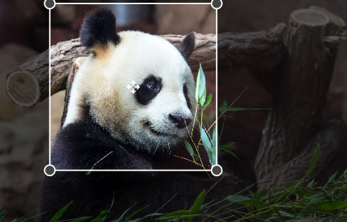

ngImgCrop
Simple Image Crop directive for AngularJS. Enables to crop a circle or a square out of an image.
Screenshots

Live demo
Requirements
- AngularJS
- Modern Browser supporting
Add files
Add the scripts to your application. Make sure the ng-img-crop.js file is inserted after the angular.js library:
<script src="angular.js"></script>
<script src="ng-img-crop.js"></script>
<link rel="stylesheet" type="text/css" href="ng-img-crop.css">
Add a dependancy
Add the image crop module as a dependancy to your application module:
var myAppModule = angular.module('MyApp', ['ngImgCrop']);
Usage
- Add the image crop directive
<img-crop>to the HTML file where you want to use an image crop control. Note: a container, you place the directive to, should have some pre-defined size (absolute or relative to its parent). That's required, because the image crop control fits the size of its container. - Bind the directive to a source image property (using image="" option). The directive will read the image data from that property and watch for updates. The property can be a url to an image, or a data uri.
- Bind the directive to a result image property (using result-image="" option). On each update, the directive will put the content of the crop area to that property in the data uri format.
- Set up the options that make sense to your application.
- Done!
Result image
The result image will always be a square for the both circle and square area types. It's highly recommended to store the image as a square on your back-end, because this will enable you to easily update your pics later, if you decide to implement some design changes. Showing a square image as a circle on the front-end is not a problem - it is as easy as adding a border-radius style for that image in a css.
Example code
The following code enables to select an image using a file input and crop it. The cropped image data is inserted into img each time the crop area updates.
<html>
<head>
<script src="angular.js"></script>
<script src="ng-img-crop.js"></script>
<link rel="stylesheet" type="text/css" href="ng-img-crop.css">
<style>
.cropArea {
background: #E4E4E4;
overflow: hidden;
width:500px;
height:350px;
}
</style>
<script>
angular.module('app', ['ngImgCrop'])
.controller('Ctrl', function($scope) {
$scope.myImage='';
$scope.myCroppedImage='';
var handleFileSelect=function(evt) {
var file=evt.currentTarget.files[0];
var reader = new FileReader();
reader.onload = function (evt) {
$scope.$apply(function($scope){
$scope.myImage=evt.target.result;
});
};
reader.readAsDataURL(file);
};
angular.element(document.querySelector('#fileInput')).on('change',handleFileSelect);
});
</script>
</head>
<body ng-app="app" ng-controller="Ctrl">
<div>Select an image file: <input type="file" id="fileInput" /></div>
<div class="cropArea">
<img-crop image="myImage" result-image="myCroppedImage"></img-crop>
</div>
<div>Cropped Image:</div>
<div><img ng-src="{{myCroppedImage}}" /></div>
</body>
</html>
Options
<img-crop
image="{string}"
result-image="{string}"
[change-on-fly="{boolean}"]
[area-type="{circle|square}"]
[area-min-size="{number}"]
[result-image-size="{number}"]
[result-image-format="{string}"]
[result-image-quality="{number}"]
[on-change="{expression}"]
[on-load-begin="{expression"]
[on-load-done="{expression"]
[on-load-error="{expression"]
></img-crop>
image
Assignable angular expression to data-bind to. NgImgCrop gets an image for cropping from it.
result-image
Assignable angular expression to data-bind to. NgImgCrop puts a data uri of a cropped image into it.
change-on-fly
Optional. By default, to reduce CPU usage, when a user drags/resizes the crop area, the result image is only updated after the user stops dragging/resizing. Set true to always update the result image as the user drags/resizes the crop area.
area-type
Optional. Type of the crop area. Possible values: circle|square. Default: circle.
area-min-size
Optional. Min. width/height of the crop area (in pixels). Default: 80.
result-image-size
Optional. Width/height of the result image (in pixels). Default: 200.
result-image-format
Optional. Format of result image. Possible values include image/jpeg, image/png, and image/webp. Browser support varies. Default: image/png.
result-image-quality
Optional. Quality of result image. Possible values between 0.0 and 1.0 inclusive. Default: browser default.
on-change
Optional. Expression to evaluate upon changing the cropped part of the image. The cropped image data is available as $dataURI.
on-load-begin
Optional. Expression to evaluate when the source image starts loading.
on-load-done
Optional. Expression to evaluate when the source image successfully loaded.
on-load-error
Optional. Expression to evaluate when the source image didn't load.